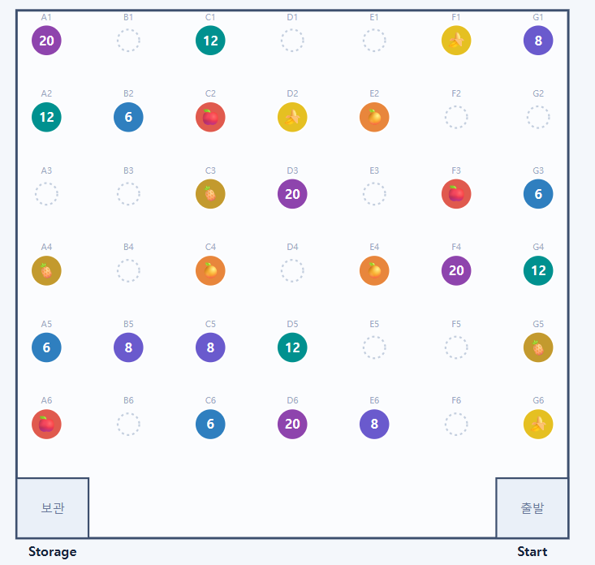

Robotics
Autonomous Object-Collecting Robot
SNU AI Robot Challenge · Team 7 · 2026
2nd PlaceAn autonomous robot that recognizes, collects, and delivers target objects during a 180-second match.
At a glance
- The problem
- Find the announced targets and deliver them before time runs out, using a basket that drops its load when the robot reverses.
- The approach
- Combine dual-camera segmentation, a calibrated route, and sensor-informed motion on a Jetson–ESP32 robot.
- Outcome / status
- Team 7: 2nd place, 140/200 points across two final runs.
- My contribution
- Perception and model training with Jinyong Jun. The motion and hardware descriptions below describe the team system.

How a detection becomes a collection action
See the objects
Two cameras feed YOLO segmentation on the Jetson Orin Nano.
Choose a target
Combine visual detections with bearing, range, and arena-cell checks.
Execute the motion
Jetson velocity commands go to the ESP32 and four wheel drivers.
Collect and deliver
Forward motion loads the basket; return and deposit when it is full.
- Final placement
- 2nd
- Final score
- 140 / 200
- Match duration
- 180 s
Engineering decisions
The mechanism shaped the software
The collector holds three objects and has no capture actuator: moving forward collects, while reversing releases. The team therefore used a fixed sweep route with live target decisions and planned returns for delivery. Braking and turning were calibrated as part of that route. A small corrective move could cost time or lose the load.


My contribution: perception that motion can use
I worked on perception and model training with Jinyong Jun. The two cameras look outward so objects can be observed as the robot passes. Their detections are expressed in a shared forward-bearing convention and sent together to navigation. This gives the planner visual evidence it can combine with position and target rules, rather than asking the detector to make the whole collection decision.
The integration lesson: accuracy has a time budget
A moving robot sees each object for a limited time. Model latency, camera reliability, detection thresholds, and vehicle speed therefore have to work together. The code includes on-device model benchmarks and camera-freeze checks. The team finished second, scoring 70 points in each final run; the linked videos show the competition behavior.
Sources: Final run 1 · Final run 2
Implementation notes & source evidence
The engineering problem
The robot had 180 seconds to find, collect, and deliver two target classes announced at match time. A Jetson Orin Nano ran perception and navigation on a four-wheel mecanum chassis. The key mechanical constraint was a passive, three-object basket: driving forward captured an object, while reversing released it. That made motion planning, stopping, and perception part of the same collection problem.
Sources: Robot and competition setup
From software commands to wheel motion
The Jetson sent body-velocity commands over a 115200-baud USB serial link to an ESP32, which commanded four JGB37-520 geared DC motors through DRV8871 drivers. The host interface explicitly converted its forward/right/yaw convention to the chassis axes and reapplied per-wheel feed-forward and encoder-direction calibration after connecting. Motion commands carried a duration and auto-stopped at the controller. The hot path sent commands without waiting for an acknowledgement, avoiding serial round-trip delays in the control loop.
Sources: Motor interface and calibration
Control choices driven by the mechanism
The team used a fixed sweep route with live collection decisions. LiDAR wall fitting supplied pose; an IMU integrated yaw to terminate calibrated turn pulses. Lateral moves used LiDAR feedback by default because the documented timed-strafe calibration left 4–7 cm error. Stops used a calibrated reverse-braking pulse, with a useful speed range around 42–57 cm/s. Cruise was therefore set near 44 cm/s rather than pushed toward the motor limit. Route corrections also had to respect the basket’s tendency to release its load during backward travel.
Sources: Motion primitives and measured limits · Braking implementation
My focus: perception that navigation can use
I worked on perception and model training with Jinyong Jun. Two outward-angled USB cameras let the system observe objects beside the route without stopping to face them. The YOLO instance-segmentation node combined both cameras into one UDP message and reprojected horizontal detections into a common forward-facing bearing. Navigation then applied confidence, range-normalized mask-area, bearing, and grid-cell ownership gates. This separated visual evidence from the decision to collect a target.
Sources: Dual-camera inference · Detection-to-decision interface
What the integration makes clear
A detector’s offline accuracy is only one part of a usable robot. At the documented scan speed, an object could appear in only two or three inference frames, so demanding many repeated detections could reject real targets. The repository includes an Orin benchmark for model latency and a frame-freeze check for each camera. The engineering lesson is to choose the model, observation gates, and vehicle speed together, and to debug raw camera frames alongside motion logs.
Sources: On-device latency benchmark · Field tuning
Competition validation
Team 7 finished second with 140/200 points across two final runs, collecting three shape targets and two fruit targets per run. The repository includes run videos and documents the calibration limits of the competition prototype.
Sources: Final runs and team roles
Inside the project